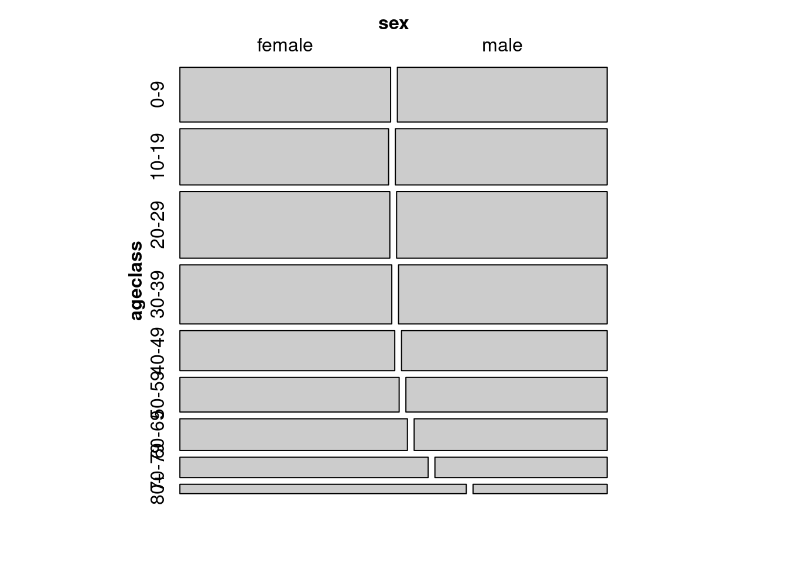

15Analyse de données de fréquence: Tableaux de contingence, modèles log-linéaires et régression de Poisson
Après avoir complété ce laboratoire, vous devriez être en mesure de:
Créer et manipuler des jeux de données en R pour analyser des données de fréquences.
Utiliser R pour éprouver une hypothèse extrinsèque à propos de données de fréquence d’une population.
Utiliser R pour éprouver l’hypothèse d’indépendance pour des tableaux de contingence à 2 dimensions.
Utiliser R pour ajuster des régressions de Poisson et des modèles log-linéaires à des données de fréquence.
15.1 Paquets et données requises pour le labo
Ce laboratoire nécessite:
les paquets R:
vcd
vcdExtra
car
les fichiers de données
USPopSurvey.csv
loglin.csv
sturgdat.csv
15.2 Organisation des données: 3 formats
Les résultats de certaines expériences sont sous forme de fréquences, par exemple le nombre de plantes infectées par un pathogène sous différents régimes d’infection, ou le nombre de tortues mâles et femelles qui éclosent à différentes températures (oui, chez les tortues le sexe dépends de la température!), etc. La question statistique qui se pose généralement est de savoir si la proportion des observations dans chaque catégorie (infecté vs non infecté, mâle vs femelle, etc) diffère significativement entre les traitements (régime d’infection ou température dans les deux exemples). Pour répondre à cette question, on peut organiser les données de manière à refléter comment les observations se retrouvent dans chaque catégorie. Il existe 3 façons d’organiser ces données. Vous devriez être capable de choisir la manière appropriée pour votre analyse, et savoir convertir entre elles avec R.
Le fichier USPopSurvey.csv contient les donnée de recensement d’une ville du midwest américain en 1980:
ageclass sex frequency
1 0-9 female 17619
2 10-19 female 17947
3 20-29 female 21344
4 30-39 female 19138
5 40-49 female 13135
6 50-59 female 11617
7 60-69 female 11053
8 70-79 female 7712
9 80+ female 4114
10 0-9 male 17538
11 10-19 male 18207
12 20-29 male 21401
13 30-39 male 18837
14 40-49 male 12568
15 50-59 male 10661
16 60-69 male 9374
17 70-79 male 5348
18 80+ male 1926
Notez qu’il y a 18 lignes et 3 colonnes dans ce fichier. Chaque ligne donne le nombre de personnes (frequency) pour un sexe et une classe d’âge. Il y a 239539 individus qui ont été classifiés selon les 18 catégories (2 sexes x 9 classes d’âge). Cette manière de représenter les données est sous le format de fréquences (frequency form). C’est un format compact permettant d’enregistrer les données quand il y a seulement des variables catégoriques à représenter.
Lorsqu’il y a des variables continues, ce format ne peut être utilisé. Les données doivent être enregistrée sous le format de cas (case form) dans laquelle chaque observation (individu) est représenté par une ligne dans le fichier, et où chaque variable est représentée par une colonne. Le package vcdExtra contient la fonction expand.dft() qui permet de convertir de la forme de fréquence à la forme de cas. Par exemple, pour créer un data frame avec 239439 lignes et 2 colonnes (sex et ageclass) à partir du data frame USPopSurvey:
ageclass sex
239534 80+ male
239535 80+ male
239536 80+ male
239537 80+ male
239538 80+ male
239539 80+ male
Ces données peuvent finalement être organisées sous le format de tableau (table form) de contingence où chacune des n variables est représentée par une dimension d’un tableau n-dimensionnel (dans notre exemple on a 2 variables, sexe et classe d’âge, et les rangées pourraient représenter les classes d’âge et les colonnes chaque sexe). Les cellules de ce tableau contiennent les fréquences. Le format tableau peut être obtenu du format de fréquence ou de cas par la commande xtabs() :
# convert case form to table formxtabs(~ageclass+sex, USPopSurvey.caseform)
(#tab:unnamed-chunk-1)Fonctions permettant la conversion de données de fréquences entre les différents formats.
De (ligne) \ Vers (colonne)
Cas
Fréquence
Tableau
Cas
xtabs(~ A + B)
table(A, B)
Fréquence
expand.dft(X)
xtabs(count ~ A + B)
Tableau
expand.dft(X)
as.data.frame(X)
15.3 Visualiser graphiquement les tableaux de contingence et test d’indépendance
Les tableaux de contingence peuvent servir à éprouver l’hypothèse d’indépendance des observations. Ceci équivaut à répondre à la question: est-ce que la classification des observations selon une variable (par exemple sex) indépendante de la classification par une autre variable (par exemple ageclass). En autres mots, est-ce que la proportion des mâles et femelles indépendante de l’âge ou varie avec l’âge?
Le package vcd inclut la fonction mosaic() qui permet de représenter graphiquement le contenu d’un tableau de contingence:
library(vcd)USTable<-xtabs(frequency~ageclass+sex, data =USPopSurvey)# save the table form as USTable dataframe# Mosaic plot of the contingency tablemosaic(USTable)

Figure 15.1: Représentation mosaique de la proportion des sexes par classe d’age
Cette mosaïque représente la proportion des observations dans chaque combinaison de catégories (ici il y a 18 catégories, 2 sexes x 9 classes d’âge). Les catégories contenant une plus grande proportion d’observations sont représentées par de plus grands rectangles. Visuellement, on peut voir que la proportion des mâles et femelles est approximativement égale chez les jeunes, mais que la proportion des femelles augmente chez les personnes âgées.
Le test de Chi carré permet d’éprouver l’hypothèse nulle que la proportion des mâles et femelles ne change pas avec l’âge (est indépendante de l’âge):
# Test of independencechisq.test(USTable)# runs chi square test of independence of sex and age class
La valeur p étant très faible, on rejette donc l’hypothèse nulle que âge et sexe sont indépendants. Ces graphiques mosaïques peuvent êtres colorés pour souligner les catégories qui contribuent le plus à cette dépendance:
# Mosaic plot of the contingency table with shadingmosaic(USTable, shade =TRUE)
Figure 15.2: Représentation mosaique de la proportion des sexes par classe d’age avec échelle de couleur
La couleur de chaque rectangle est proportionnelle à la déviation des fréquences observées de ce qui serait attendu si l’âge et le sexe étaient indépendants. Les classes d’âge 40-49 et 50-59 ont un rapport des sexe approximativement égal à celui de toutes les classes d’âge réunies. Il y a plus de jeunes mâles et de femelles âgées que si le rapport des sexe ne variait pas avec l’âge.et ces rectangles sont colorés en bleu. De l’autre côté, il y a moins de jeunes femelles et de mâles âgés que si le rapport des sexe était indépendant de l’âge, et ces rectangles sont en rouge. La valeur p à la droite de la figure est pour le test de Chi carré qui éprouve l’hypothèse nulle d’indépendance pour l’ensemble des observations, toutes classes d’âge confondues.
L’estimation de la valeur p associée à la statistique du Chi carré est approximative lorsque les fréquences attendues sont faibles dans certaines cellules, et ce particulièrement pour les tableaux de contingence 2x2. Deux options permettant des valeurs p plus exactes sont préférées dans ce cas, et le choix dépends du nombre total d’observations. Pour de grands échantillons (comme ici avec plus de 200,000 observations!), une approche par simulation de type Monte Carlo est suggérée et peut être obtenue en ajoutant simulate.p.value=TRUE comme argument à la fonction chisq.test() :
# Monte-carlo estimation of p value (better for small n)chisq.test(USTable, simulate.p.value =TRUE, B =10000)
Pearson's Chi-squared test with simulated p-value (based on 10000
replicates)
data: USTable
X-squared = 1162.6, df = NA, p-value = 9.999e-05
Ici, la simulation a été faite B=10000 fois, et la valeur de Chi carré observée avec les données réelles n’a jamais été observée. Par conséquent, p a été estimé à 1/10001=9.999e-05, qui est beaucoup plus élevé que la valeur p estimée à partir de la distribution théorique de Chi carré (p< 2.2e-16). Cette différence est due au moins en partie à un artéfacts de la simulation. Pour obtenir des valeurs p de l’ordre de 1e-16, il faut effectuer au moins 10 16 simulations. Et je ne suis pas aussi patient que ça!
Pour de petits tableaux de contingence avec des fréquences attendues petites, le test exact de Fisher peut servir à estimer la valeur p associée à l’hypothèse d’indépendance. Mais ce test ne peut être effectué avec de grands échantillons, comme ici:
# Fisher exact test for contingency tables (small samples and small tables)fisher.test(USTable)# fails here because too many observations
Error in fisher.test(USTable): FEXACT error 40.
Out of workspace.
fisher.test(USTable, simulate.p.value =TRUE, B =10000)
Fisher's Exact Test for Count Data with simulated p-value (based on
10000 replicates)
data: USTable
p-value = 9.999e-05
alternative hypothesis: two.sided
15.4 Régression de Poisson: une alternative au test de Chi carré pour les tableaux de contingence
Rendu à ce stade, vous devriez avoir appris à apprécier la flexibilité et la généralité des modèles linéaires, et réaliser que le test de t est un cas spécial d’un modèle linéaire avec une variable indépendante catégorique. L’analyse des tableaux de contingence par le test du Chi carré peut également être généralisé. Un modèle linéaire généralisé pour une distribution de Poisson peut être utilisé quand la variable dépendante est une fréquence d’observations et les variables indépendantes sont catégorique (comme pour les tableaux de contingence, on parle alors de modèles log-linéaires), continue (régression Poisson), ou une combinaison de variables indépendante continues et catégoriques (aussi appelé régression de Poisson, mais avec des variables catégoriques en plus, analogue à l’ANCOVA sensu largo).
Ces modèles prédisent le logarithme naturel de la fréquence des observations en fonction des variables indépendantes. Comme pour les modèles linéaires qui présument de la normalité des résidus, on peut évaluer la qualité d’ajustement du modèle (par AICc par exemple) et la signification statistique des termes du modèle (par exemple en comparant l’ajustement d’un modèle “complet” et celui d’un modèle qui exclue un terme à tester). On peut également obtenir des estimés des paramètre pour chaque terme dans le modèle, avec des intervalles de confiance et des valeur p pour l’hypothèse nulle que ce terme n’a pas d’influence sur la fréquence.
La fonction glm() avec l’option family=poisson() permet l’estimation, par la méthode du maximum de vraisemblance, de modèles linéaires pour des fréquences. Comparativement aux modèles linéaires vus précédemment, une des particularité de ces modèles est que seuls les termes d’interaction sont d’intérêt. En partant des données de recensement en forme tableau, on peut ajuster un glm aux fréquences observées par sexe et classe d’âge par:
mymodel<-glm(frequency~sex*ageclass, family =poisson(), data =USPopSurvey)summary(mymodel)
L’ajustement du modèle complet, avec L’interaction triple sex:ageclass interaction, permet à la proportion des mâles et femelles de changer entre les classes d’âge, et donc d’estimer exactement les fréquences observées pour chaque combinaison de sexe et classe d’âge (notez que les résidus (deviance residuals) sont tous 0, et que l’estimé de déviance résiduelle est également approximativement zéro).
Un masochiste peut utiliser le tableau des coefficients pour obtenir la fréquence prédite pour les différentes catégories. Les fréquences prédites, comme pour l’ANOVA à critères multiple, sont obtenus en additionnant les coefficients appropriés. Puisque, en R, le premier niveau d’une variable catégorique (facteur) en ordre alphabétique) est utilisé comme référence, l’ordonnée à l’origine (9.776733) est la valeur prédite pour le logarithme naturel de la fréquence des femelles dans la première classe d’âge (0 to 9). En effet, 9.776733 est approximativement égal à 17619, le nombre observé de femelles dans cette classe d’âge.
Pour les mâles dans la classe d’âge 80+, il faut calcule l’antilog du coefficient pour l’ordonnée à l’origine (pour les femelles dans la première classe d’âge), plus le coefficient pour sexmale (égal à la différence du log de la fréquence entre les femelles et les mâles), plus le coefficient pour la classe d’âge 80+ qui corresponds à la différence de fréquence entre cette classe d’âge et la classe d’âge de référence, plus le coefficient pour l’interaction sexmale:ageclass80+ (qui corresponds à la différence de proportion de mâles dans cette classe d’âge par rapport à la classe d’âge de référence). Ceci donne: ln(frequency)=9.776733-0.004608-1.454582-0.754343=7.5632, et la fréquence est égale à e 7.5632 =1926
Il y a de nombreuses valeur p dans ce tableau, mais elle ne sont en général pas très utiles. Pour éprouver l’hypothèse que l’effet du sexe sur la fréquence est identique dans chaque classe d’âge (i.e. que sexe et âge sont indépendants), vous devez ajuster un modèle qui exclut cette interaction (sex:ageclass) et déterminer comment l’ajustement du modèle est affecté.
La fonction Anova() du package car permet de prendre un raccourci:
Anova(mymodel, type =3, test ="LR")
Analysis of Deviance Table (Type III tests)
Response: frequency
LR Chisq Df Pr(>Chisq)
sex 0.2 1 0.6657
ageclass 21074.6 8 <2e-16 ***
sex:ageclass 1182.2 8 <2e-16 ***
---
Signif. codes: 0 '***' 0.001 '**' 0.01 '*' 0.05 '.' 0.1 ' ' 1
Les arguments type=3 and test="LR" font en sorte que le test effectué pour comparer le modèle complet aux modèles réduits est les test de Chi carré sur le rapport de vraisemblance (Likelihood Ratio Chi-Square) à partir de la variance résiduelle, et que c’est un test partiel, et non séquentiel.
Selon ces tests, il n’y a pas d’effet principal de sex (p=0.667) mais il y a un effet principal de ageclass et une interaction significative sex:ageclass. L’interaction significative signifie que l’effet du sexe sur la fréquence varie selon les classes d’âge, bref que le rapport des sexe varie avec l’âge. L’effet principal de ageclass signifie que la fréquence des individus varie avec l’âge dans la population recensée (i.e. que certaines classes d’âge sont plus populeuses que d’autres). L’absence d’un effet principal du sexe suggère qu’il y a approximativement le même nombre de mâles et femelles dans l’échantillon (quoique, puisqu’il y a une interaction, vous devez être prudents en faisant cette déclaration. C’est “vrai” au total, mais semble incorrect pour certaines classes d’âge).
15.5 Tester une hypothèse extrinsèque
Le test d’indépendance ci-dessus éprouve une hypothèse intrinsèque parce que les proportions utilisées pour calculer les valeurs attendues et tester l’indépendance sont celles observées (i.e. la proportion des mâles et femelles dans tout l’échantillon, et la proportion des individus dans chaque classe d’âge).
Pour éprouver l’hypothèse (extrinsèque) que le rapport des sexes est 1:1 pour les individus les plus jeunes (ageclass 0-9), on doit produire le tableau 2X2 des fréquences observées et attendues. Les fréquences attendues sont obtenues simplement en divisant le total des mâles et femelles par 2.
Code R pour créer et analyser un tableau de contingence 2X2 et éprouver une hypothèse extrinsèque
### Produce a table of obs vs exp for 0-9 age classPopn0.9<-rbind(c(17578, 17578), c(17619, 17538))### Run X2 test on above tablechisq.test(Popn0.9, correct =F)### X2 without Yateschisq.test(Popn0.9)### X2 with Yates
Exercice
Éprouvez l’hypothèse nulle que la proportion de mâles et femelles à la naissance est égale. Que concluez-vous? Croyez-vous que ces données sont appropriées pour tester cette hypothèse?
Pearson's Chi-squared test with Yates' continuity correction
data: Popn0.9
X-squared = 0.088758, df = 1, p-value = 0.7658
Notez que pour un tableau 2X2, on devrait utiliser une correction de Yates ou un test de Fisher. Le test de Fisher ne pouvant être utilisé lorsque l’échantillon dépasse 200, on utilise la correction de Yates. Selon cette analyse, on accepte l’hypothèse nulle que le rapport des sexes est 1:1à la naissance. Ceci dit, ces données ne sont pas très appropriées pour éprouver l’hypothèse car la première classe d’âge est trop grossière. Il est possible que le rapport des sexes à la naissance soit différent de 1:1 mais que la mortalité différentielle des deux sexes compense au cours des 9 premières années (par exemple si il y a plus de mâles à la naissance, mais que les jeunes garçons ont une survie plus faible au cours de leurs 9 premières années). Dans un tel cas, le rapport des sexes n’est PAS de 1:1 à la naissance, mais on accepte l’hypothèse nulle à partir des données dans la classe d’âge 0-9.
15.6 Régression de Poisson pour l’analyse de tableaux de contingence à plusieurs critères
Le principe d’éprouver l’indépendance en examinant les interactions peut être utilisé avec les tableaux de contingence à plusieurs critères. Par exemple, examinons si la température (2 niveaux: base et haute) et l’éclairage (2 niveaux: bas et haut) affectent si des plantes sont infectées (2 niveaux: infecté et non-infecté) par un pathogène. On peut représenter ces données par un tableau de contingence à 3 critères (température, lumière, statut d’infection).
L’ajustement de modèles log-linéaires à des données de fréquence implique que l’on éprouve plusieurs modèles en les comparant au modèle complet (saturé). Une série de modèles contenant tous les termes sauf une des interactions qui nous intéressent est produite, et l’ajustement de chaque modèle est comparé à celui du modèle complet. Si la réduction de la qualité d’ajustement n’est pas significative, cela implique que l’interaction manquante contribue peu à la qualité de l’ajustement. Par contre, si le modèle réduit s’ajuste nettement moins bien aux données, alors l’interaction manquante contribue beaucoup à l’ajustement du modèle complet. Comme pour les tableaux de contingence 2X2, les termes qui nous intéressent le plus sont les interactions, pas les effets principaux, si l’on teste pour l’indépendance des différents facteurs.
Le fichier loglin.csv contient les fréquences (frequency) des plantes infectées ou non infectées (infected) à basse et haute température (temperature) à basse et haute lumière (light). Pour visualiser ces données et déterminer si le taux d’infection dépends de la lumière et de la température, on peut faire une figure mosaïque et ajuster un modèle log-linéaire:
loglin<-read.csv("data/loglin.csv")# Convert from frequency form to table form for mosaic plotloglinTable<-xtabs(frequency~temperature+light+infected, data =loglin)# Create mosaic plot to look at datamosaic(loglinTable, shade =TRUE)
Figure 15.3: Proportion de plantes infectées en fonction de la température er la lumière
Cette expérience contrôlée avec le même nombre de plantes à chaque niveau de lumière et de température produit une mosaïque où la surface occupée par les observations dans les quatre quadrants est égale. Ce qui nous intéresse, le taux d’infection par le pathogène, semble varier entre les quadrants (i.e. les niveaux de température et de lumière). Le rectangle rouge dans le coin en bas à gauche indique que le nombre de plantes infectées à basse température et haute lumière est plus faible qu’attendu si ces deux facteurs n’influencent pas le taux d’infection. Même chose pour les conditions de basse lumière et de haute température (coin supérieur droit). La valeur p au bas de l’échelle représente un test d’indépendance équivalent à comparer le modèle complet au modèle excluant toutes les interactions et ne contenant que les effets principaux de la température, la lumière, et le statut d’infection sur le logarithme naturel du nombre d’observations.
# Fit full modelfull.model<-glm(frequency~temperature*light*infected, family =poisson(), data =loglin)# Test partial effect of terms in full modelAnova(full.model, type =3, test ="LR")
Les probabilités associées à chaque terme sont ici calculées en comparant l’ajustement du modèle complet à un modèle qui exclue seulement le terme d’intérêt. Plusieurs des termes sont ici sans véritable intérêt puisque les fréquences sont partiellement contrôlées dans notre expérience. Puisque la question biologique porte sur le taux d’infection, les seuls termes d’intérêt sont les termes d’interactions qui incluent le statut d’infection (temperature:infected, light:infected et temperature:light:infected.
L’interation significative temperature:infected implique que le taux d’infection n’est pas indépendant de la température. D’ailleurs il est apparent dans la mosaïque que le taux d’infection (le nombre relatif de plantes infectées) est supérieur à haute température.
L’interaction significative light:infected implique que le taux d’infection dépends de la lumière. La mosaïque illustre que la proportion des plantes infectées est plus élevée en basse lumière.
L’interaction temperature:light:infected n’est pas significative. Cela implique que l’effet de la température et de la lumière sur le taux d’infection sont indépendants. Autrement dit, l’effet de la lumière sur le taux d’infection ne dépends pas de la température, et vice versa.
15.7 Exercice
Le fichier Sturgdat contient les données qui vous permettront d’éprouver l’hypothèse que le nombre d’esturgeons capturé est indépendants du site, de l’année, et du sexe. Avant de commencer l’analyse, les données devront être réorganisées pour pouvoir ajuster un modèle log-linéaire:
Exercice
Ouvrez sturgdat.csv, puis utilisez la fonction table() pour obtenir les fréquence d’individus capturés par sex, location, et year . Sauvegardez ce tableau comme strugdat.table . Faites une figure mosaïque de ces données.
sturgdat<-read.csv("data/sturgdat.csv")# Reorganize data from case form to table formsturgdat.table<-with(sturgdat, table(sex, year, location))# display the tablesturgdat.table
, , location = CUMBERLAND
year
sex 1978 1979 1980
FEMALE 10 30 11
MALE 14 14 6
, , location = THE_PAS
year
sex 1978 1979 1980
FEMALE 5 12 38
MALE 16 12 18
# Create data frame while converting from table form to frequency formsturgdat.freq<-as.data.frame(sturgdat.table)# display data framesturgdat.freq
sex year location Freq
1 FEMALE 1978 CUMBERLAND 10
2 MALE 1978 CUMBERLAND 14
3 FEMALE 1979 CUMBERLAND 30
4 MALE 1979 CUMBERLAND 14
5 FEMALE 1980 CUMBERLAND 11
6 MALE 1980 CUMBERLAND 6
7 FEMALE 1978 THE_PAS 5
8 MALE 1978 THE_PAS 16
9 FEMALE 1979 THE_PAS 12
10 MALE 1979 THE_PAS 12
11 FEMALE 1980 THE_PAS 38
12 MALE 1980 THE_PAS 18
# Look at the data as mosaic plot# mosaic using the table created abovemosaic(sturgdat.table, shade =TRUE)
Figure 15.4: Fréquence de femelles et males en fonction de l’année et du lieu
Exercice
À partir de ces données en format de fréquence, ajustez le modèle loglinéaire complet et le tableau d’anova avec les statistique de Chi carré pour les termes du modèles. Est-ce que l’interaction triple (location:year:sex) est significative? Est-ce que le rapport des sexes varien entre les sites ou d’une année à l’autre?.
# Fit full modelfull.model<-glm(Freq~sex*year*location, data =sturgdat.freq, family ="poisson")summary(full.model)
Call:
glm(formula = Freq ~ sex * year * location, family = "poisson",
data = sturgdat.freq)
Coefficients:
Estimate Std. Error z value
(Intercept) 2.30259 0.31623 7.281
sexMALE 0.33647 0.41404 0.813
year1979 1.09861 0.36515 3.009
year1980 0.09531 0.43693 0.218
locationTHE_PAS -0.69315 0.54772 -1.266
sexMALE :year1979 -1.09861 0.52554 -2.090
sexMALE :year1980 -0.94261 0.65498 -1.439
sexMALE :locationTHE_PAS 0.82668 0.65873 1.255
year1979:locationTHE_PAS -0.22314 0.64550 -0.346
year1980:locationTHE_PAS 1.93284 0.64593 2.992
sexMALE :year1979:locationTHE_PAS -0.06454 0.83986 -0.077
sexMALE :year1980:locationTHE_PAS -0.96776 0.87942 -1.100
Pr(>|z|)
(Intercept) 3.3e-13 ***
sexMALE 0.41641
year1979 0.00262 **
year1980 0.82732
locationTHE_PAS 0.20569
sexMALE :year1979 0.03658 *
sexMALE :year1980 0.15011
sexMALE :locationTHE_PAS 0.20950
year1979:locationTHE_PAS 0.72957
year1980:locationTHE_PAS 0.00277 **
sexMALE :year1979:locationTHE_PAS 0.93875
sexMALE :year1980:locationTHE_PAS 0.27114
---
Signif. codes: 0 '***' 0.001 '**' 0.01 '*' 0.05 '.' 0.1 ' ' 1
(Dispersion parameter for poisson family taken to be 1)
Null deviance: 5.7176e+01 on 11 degrees of freedom
Residual deviance: -2.6645e-15 on 0 degrees of freedom
AIC: 77.28
Number of Fisher Scoring iterations: 3
Ce tableau a trois critères: sex, location et year . Donc le modèles compelt (saturé) contient 7 termes: trois effets principaux (sex, location et year), trois interactions du second degré (double) (sex:year, sex:location et year: location) et une interaction du troisième degré (triple)(sex:year:location). La déviance nulle est 57.17574, la déviance résiduelle du modèle complet est, sans surprise, 0. La déviance pouvant être attribuée à l’interaction triple est 1.6677, non significative.
Qu’est ce que cela implique? S’il y a des interactions doubles, alors elles ne dépendent pas de la troisième variable. Par exemple, si le rapport des sexe des esturgeons varie d’une année à l’autre (une interaction sex:year), alors cette tendance est la même aux 2 stations.
Puisqu’il n’y a pas d’interaction triple, il est (statistiquement) justifié de combiner les données pour éprouver les interactions du second degré. Par exemple, pour tester l’effet sex:location, on peut combiner les années. Pour tester l’effet sex:year, on peut combiner les sites. Cette aggrégation a pour effet d’augmenter la puissance, et est analogue à la stratégie en ANOVA à critères multiples. L’approche de la régression de Poisson permet de faire l’équivalent simplement en ajustant le modèle sans l’interaction du troisième degré.
Ajustez le modèle en excluant l’interaction du troisième degré:
Solution
o2int.model<-glm(Freq~sex+year+location+sex:year+sex:location+year:location, data =sturgdat.freq, family ="poisson")Anova(o2int.model, type =3)
L’interaction sex:location n’explique pas une portion significative de la déviance, alors que les deux autres sont significatives. Le rapport des sexes ne varie pas entre les sites, mais il varie selon les années. L’interaction year:location est aussi significative (voir plus pas pour son interprétation).
Devriez vous tenter de simplifier le modèle encore plus? Les vrais statisticiens sont divisés sur cette question. Tous s’entendent cependant sur le fait que conserver des interactions non significatives dans un modèle peut réduire la puissance. De l’autre côté, le retrait des interactions non significatives peut rendre l’interprétation plus délicate lorsque les observations ne sont pas bien balancées (i.e. il y a de la colinéarité entre les termes du modèle).
Ajustez le modèle sans l’interaction sex:location :
Solution
o2int.model2<-glm(Freq~sex+year+location+sex:year+year:location, data =sturgdat.freq, family ="poisson")Anova(o2int.model2, type =3)
Les deux interactions sont significatives et ce modèle semble le meilleur. Ce modèle est:
\[ln[f_{(ijk)} ] = location + sex + year + sex:year + location:year\]
Comment ces effets peuvent-ils être interprétés biologiquement? Souvenez vous que, comme dans les test d’indépendance, on n’est pas vraiment intéressé aux effets principaux, seulement par les interactions. Par exemple, l’effet principal de location tnous dit que le nombre total d’esturgeons capturé (le total des 2 sexes pendant les 3 années d’échantillonnage) diffère entre les 2 sites. Cela n’est pas vraiment surprenant et peu intéressant en l’absence d’information sur l’effort de pêche. Cependant, l’interaction sex:year nous dit que le rapport des sexes a changé d’une année à l’autre. Et puisque l’interaction du troisième degré n’est pas significative, on sait que ce changement dans le temps est approximativement le même dans les deux sites. Un résultat possiblement intéressant. Pourquoi? Comme l’expliquer?
L’interaction location:year nous dit que le nombre d’esturgeons n’a pas seulementt varié d’une année à l’autre, mais que la tendance dans le temps diffère entre les deux sites. Ceci pourrait refléter une différence d’effort de pêche à un des sites durant l’une des campagnes d’échantillonnage, ou un impact à seulement un des deux sites la dernière année par exemple. Mais cette tendance est la même pour les mâles et les femelles (donc n’a pas affecté le rapport des sexes) puisque l’interaction triple n’est pas significative.